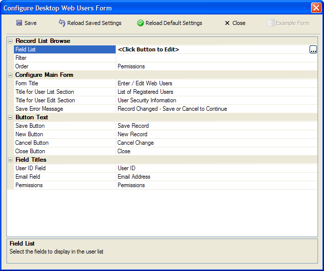

Configure Desktop Web Users Form Dialog
The Configure Desktop Web Users Form dialog allows you to design the Enter/Edit Web Users? dialog that is used to maintain the list of users of your web applications.
To open this dialog:
Display the Web Projects Control Panel.
Right click on the right window (which lists pages and components) and select Security > Security Settings.
Click
 in the Security Tables > User Table
Configure Desktop Access property.
in the Security Tables > User Table
Configure Desktop Access property.

Record List Browse
|
Property |
Options and Description |
|
Field List |
This property defines the fields to display in the user
list. Click |
|
Filter |
This property defines which user records will be displayed.
By default, the filter is NULL (equivalent to ".T."), which
displays all user records. Optionally, click |
|
Order |
This property defines the order in which user records
will be displayed. Optionally, click |
Configure Main Form
|
Property |
Options and Description |
|
Form Title |
This property defines the title of the Configure Desktop Web Users form. |
|
Title for User List Section |
This property defines the title to use for the frame around the list of users. |
|
Title for User Edit Section |
This property defines the title to use for the frame around the controls that allow editing of user information. |
|
Save Error Message |
This property defines message displayed in the Enter/Edit Web Users? dialog to tell the user to save or cancel changes to a user security record. |
Button Text
|
Property |
Options and Description |
|
Save Button |
This property defines the label of the save button on the Enter/Edit Web Users? dialog. |
|
New Button |
This property defines the label of the new button on the Enter/Edit Web Users? dialog. |
|
Cancel Button |
This property defines the label of the cancel button on the Enter/Edit Web Users? dialog. |
|
Close Button |
This property defines the label of the close button on the Enter/Edit Web Users? dialog. |
Field Titles
|
Property |
Options and Description |
|
User ID Field |
This property defines the title of the User ID control on the Enter/Edit Web Users? dialog. |
|
Password Field |
This property defines the title of the Password control on the Enter/Edit Web Users? dialog. |
|
Permissions |
This property defines the label of the Permissions button on the Enter/Edit Web Users? dialog. |
Limitations
Web publishing applications only.
See Also